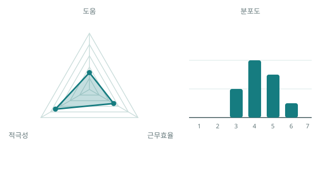

도움
함께 일할 때, 동료와 조직에 가장 도움이 되는 사람은 누구인가요?

개인의 평가는 주관적이지만, 모두의 평가가 모이면 의미 있는 데이터가 됩니다.
모두의평가 이야기
평가 결과를 보고 이런 생각이 들 때가 있지 않으셨나요?
“어? 저 사람이 왜 좋은 평가를 받았지?”
“저 사람은 열심히 하는데, 위에서는 잘 알아주지 못하네.”
열심히 기여한 사람이 충분히 인정받지 못했다고 느끼거나, 함께 일하며 바라본 모습도 평가에 포함되면 좋겠다고 생각해 보신 적은 없으신가요?

하루 종일 함께 일하다 보면, 서로의 업무 방식과 태도를 자연스럽게 알게 되지 않나요?
누가 열심히 하는지, 누가 도움을 주는지, 누가 요령을 피우는지…
우리는 서로의 모습을 가까이서 알고 있지만, 위에서 바라보는 분들도 이런 모습을 잘 알고 계실까요?

회사에서 원하는 인재와 동료들이 함께 일하고 싶은 사람은 결국 비슷한 모습을 가지고 있지 않을까요?
함께 일할 때, 동료와 조직에 가장 도움이 되는 사람은 누구인가요?
새로운 일이 생겼을 때, 가장 적극적으로 참여하는 사람은 누구인가요?
근무시간에 업무에 가장 집중하고, 주어진 시간을 효율적으로 활용하는 사람은 누구인가요?
이런 서로의 모습을 평가에 담으려면, 무엇보다 평가가 무기명으로 안전하게 이루어져야 하지 않을까요?

더 나은 평가를 위해서는, 한 사람의 시선만으로는 충분하지 않습니다.
모두의평가는 함께 일하는 구성원 모두의 판단을 모읍니다.
구성원 모두가 세 가지 질문에 대해 전체 구성원의 순서를 정합니다. 누가 누구를 어떻게 평가했는지는 공개되지 않고, 여러 사람의 판단은 평균과 분포로만 남습니다.
개인의 평가는 감추고, 모두의 평가 결과만 남깁니다.



KPI와 OKR처럼 목표 달성도와 성과를 확인하는 정량적 평가는 중요합니다.
하지만 숫자만으로는 함께 일하는 과정에서 나타나는 업무 태도와 협업 기여까지 모두 담아내기 어렵습니다.
모두의평가는 기존 평가를 대체하지 않습니다. 기존의 정량적 평가에 함께 일한 동료들의 시선을 더해, 한 사람의 업무 모습을 더 균형 있고 입체적으로 바라볼 수 있도록 돕습니다.
모두의평가는 평가 항목을 하나 더하는 것이 아니라, 평가를 바라보는 시선을 하나 더하는 방법입니다.
더 공정하고 더 나은 평가를 위해,
함께 일한 사람들의 시선을 더합니다.

모두가 평가하고, 집단의 결과만 남깁니다.